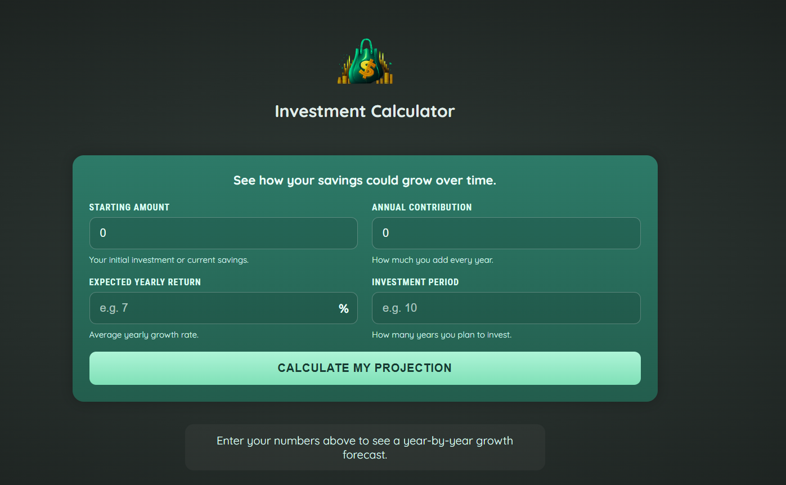
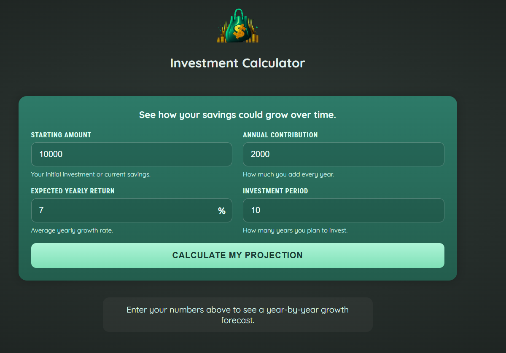
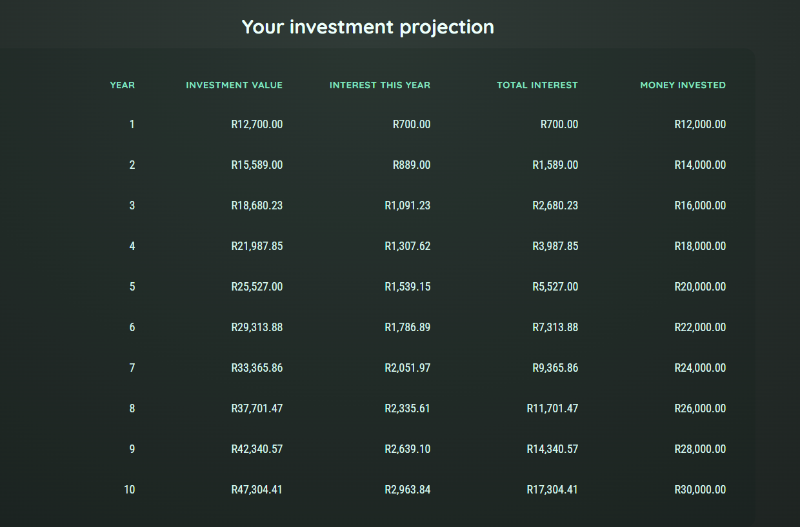

A responsive Angular web application that helps users estimate how their investments could grow over time based on their starting amount, annual contributions, expected return rate, and investment period.
The application provides a simple way to explore long-term investment projections. Users enter their investment assumptions and receive a year-by-year breakdown showing how their investment value and interest accumulation can change over time.
The application was developed using Angular's standalone component architecture. The user input functionality is separated from the investment results presentation, allowing the application to maintain a clear separation of responsibilities.
The main calculation logic is handled by the Angular application component, while dedicated components are used for collecting user inputs and displaying the investment results. TypeScript is used throughout the application to provide strongly typed data structures and maintain predictable application logic.
The calculator applies the expected annual return rate to the current investment value for each year and then adds the user's annual contribution. This process is repeated for the selected investment period to produce a year-by-year projection.
The calculated results are presented in a structured table, allowing users to follow the investment's projected growth, annual interest, accumulated interest, and total contributions over time.
For example, a user can enter an initial investment of R10,000, an annual contribution of R2,000, an expected annual return of 7%, and an investment period of 5 years.
The application then generates a year-by-year projection showing the estimated investment value and interest earned throughout the selected period.


